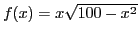
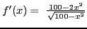
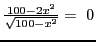
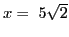
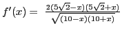
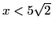
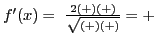
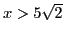
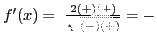
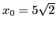

Next: Examining a function for Up: Maxima, minima and inflection Previous: Maximum and minimum values Contents Index
Working rule:
Solution. .
First step. .
Second step.  implies , which is the critical value. Only the positive sign of the radical is taken, since, from the nature of the problem, the negative sign has no meaning.
Third step. .
Fourth step. When , . When , .
Since the sign of the first derivative changes from  to
at
, the function has a maximum value
to
at
, the function has a maximum value
In SAGE:
[fontsize=\small,fontfamily=courier,fontshape=tt,frame=single,label=\sage]
sage: x = var("x")
sage: f(x) = x*sqrt(100 - x^2)
sage: f1(x) = diff(f(x),x); f1(x)
sqrt(100 - x^2) - x^2/sqrt(100 - x^2)
sage: crit_pts = solve(f1(x) == 0,x); crit_pts
[x == -5*sqrt(2), x == 5*sqrt(2)]
sage: x0 = crit_pts[1].rhs(); x0
5*sqrt(2)
sage: f(x0)
50
sage: RR(f1(x0-0.1))>0
True
sage: RR(f1(x0+0.1))<0
True
This tells us that
 is a critical point, at
which the area is square inches and at which the
area changes from increasing to decreasing. This implies that the
area is a maximum at this point.